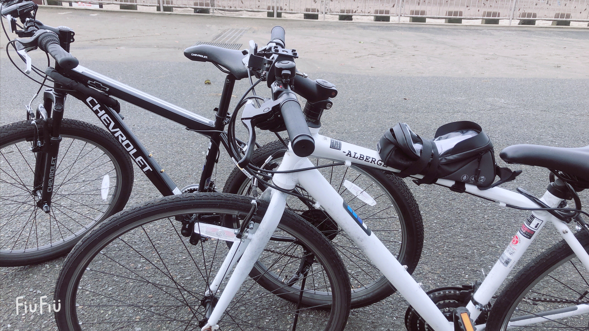

動画編集パート２

前回のgit更新”gopro8 Black 購入しちゃいました！”で３つやりたいことを挙げた。
だが、私の最終目的はやりたいこと３つ目のCMを作れるようになること。
しかし、私はまだ動画編集に触れることがほぼ初心者同然なので、
まずは、好きなものを好きなように編集するところからスタートする。
ところで、今の私はというと、まだ携帯で動画編集に触れている段階だ。
つまりは、動画編集にようやく踏み出した…
といったところだ。
使っている動画編集アプリはInShotという誰でも簡単に動画編集を行えるアプリ。
そんなこんな、前回と今回の２回で、
だいぶ動画編集の初歩的な使い方（音楽の取り込み、速度の変更、エフェクトの挿入、間の使い方など）を学習することができた。
なので！！
そろそろパソコンで動画編集に触れてみようかな…。
と、考えている次第です！！
使用するソフトは、Filmora9という
imovieに変わるソフトである。
私のパソコンはなぜかimovieが使えないので
今後はこのFilmora9というソフトで
学習を進めていきたいと考える。
ということで、
学習を進めていきたいと思います！！
〜Cycling Story 2 〜